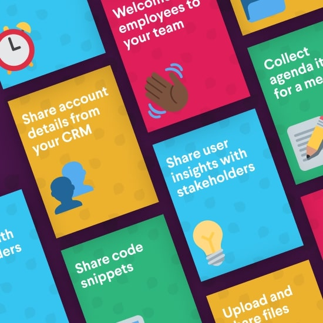

Slack Tips
Learn how you and your team can get more out of Slack — making your work a little simpler in the process.
Boost work productivity View All
Turn Slack into your calendar’s best friend. Get more out of you and your team’s work day with these time-saving tips.

Slack basics View All
Learn the fundamentals of Slack — or something you might have missed — with these essential tips.

Cross-functional collaboration View All
Connect the dots across your company. Learn how to collaborate with other departments and teams in Slack.


Every department & role View All
No matter what kind of work you do, you can do it in Slack. Learn how to integrate Slack with the tools you use every day.

Quick & simple View All
Save time up front and in the long run with these quick tips for collaborating with your team in Slack.